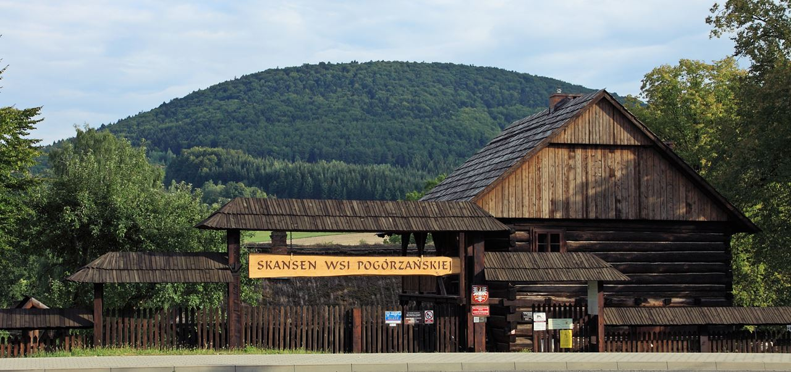

Skansen w Szymbarku

By³ rok 1962. Jerzy Tur – Wojewódzki Konserwator Zabytków w Rzeszowie, wystapi³ z propozycj¹ zorganizowana w Szymbarku placówki muzealnej. Dalej spraw¹ zaja³ siê Wydzia³ Kultury Prezydium Powiatowej Rady Narodowej a od 1965 Powiatowy Konserwator Zabytków w Gorlicach. W planowaniu ekspozycji skansenu, który otrzyma³ nazwê “Oœrodek Budownictwa Ludowego w Szymbarku”, korzystano z pomocy profesora Romana Reinfussa.
W 1986 r. dr Ryszard Brykowski i in¿. arch. Wojciech Jankowski opracowali koncepcjê zagospodarowania przestrzennego “Oœrodka Budownictwa Ludowego w Szymbarku”. W oparciu o nia rozmieszczone zosta³y poszczególne obiekty na terenie skansenu. Otwarcie muzeum nast¹pi³o 19.09.1987 roku.